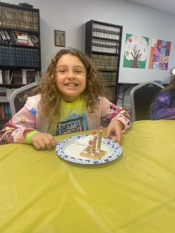
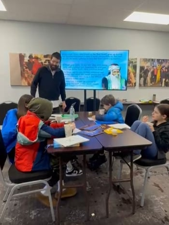
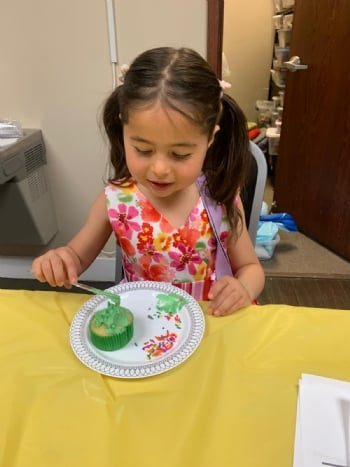
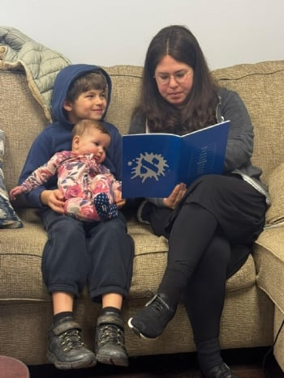

★ Chabad of Troy · 2026–27 School Year
Make. Bake. Belong.
Where kids cook, create, and come home proud. A real kitchen, a real art studio, and a Judaism they can actually taste.
New families: your first year is free — just the $100 registration fee per child. No child is turned away. Apply for assistance before registering.
Culinary. Creative. Jewish.
You belong here. No membership needed.
Families come from across the Metro Detroit area. Affiliated and unaffiliated, observant and not. Most students arrive knowing no Hebrew at all, and that is the ordinary starting point here rather than the exception.




Family Hamantaschen Bake · Chabad Jewish Center of Troy
What the Morning Looks Like
Two hours. Nothing wasted.
Parents always ask what actually happens. Here it is, start to finish.
-
10:00
Arrival & good morning
Coats off, aprons on. We start the morning together and take a look at the week ahead.
-
10:15
Hebrew
Small groups by reading level, not by age. Every child moves at their own pace — from first letters all the way to reading full prayers.
-
10:50
Studio & kitchen
The hands-on heart of the morning. Most weeks that is the art studio; about once a month every group takes its turn in the kitchen.
-
11:40
Torah & story
The core Jewish ideas that shape how a child sees themselves — told as stories, by teachers who know how to stop on a cliffhanger.
-
12:00
Taste & pickup
We eat what we made. Whatever doesn't get eaten goes home in a container with your child's name on it.
Every division follows this rhythm, adapted to age. The youngest get more movement and more snack. The teen divisions get more depth, more responsibility, and more freedom in the kitchen.
Sundays, Filmed
See a morning for yourself.
Short clips from actual Sundays, filmed as the morning happened. Tap any one to play.
Filmed at Hebrew School of the Arts, 2024–25 school year. Tap a clip to play it with sound.
Four Divisions
Every age gets a program built for them.
Not one classroom stretched across ten years. Three divisions, each with its own teachers, its own curriculum and its own personality.
Sprouts
Ages 4–5
Their first taste of everything. Songs, snacks, mess and repetition.
Learn more → 02Roots
Ages 6–8
Where it all starts to click. Reading, full kitchen rotations, the studio.
Learn more → 03The Mitzvah Crew & Bat Mitzvah Club
Ages 9–13
Old enough for the real thing. And Bar and Bat Mitzvah preparation.
Learn more →The Program
A real kitchen, a real studio, and Hebrew that sticks.
Ten levels of Hebrew reading, a full turn through the kitchen every month, the art room, and the six subjects we teach every year.
See the program →Dates
The year at a glance.
- Sundays, 10:00 AM – 12:00 PMEvery week the school is in session
- October 11, 2026First Sunday
- 23 sessionsThe full schedule, including breaks, will be published soon
- No session on national holidaysOr on Jewish holidays that fall on a Sunday
Missed a Sunday?
Let us know and we will send home what your child missed, plus their project. Nobody falls behind over a soccer tournament.
Days they will talk about
- Sukkot in the Sukkah
- The Chanukah party
- Model matzah bakery
- Lag BaOmer family barbecue
- End-of-year celebration & art show
Tuition
Clear pricing. No surprises.
| What | Amount | Notes |
|---|---|---|
| Tuition | $950 | The full school year, per child. |
| Registration | $100 | Per child, separate from tuition. Not covered by scholarship assistance. |
| New families | Free | Your first year of tuition is free. The registration fee still applies. |
Tuition covers everything: materials, kitchen ingredients, art supplies, snack, holiday programs and every special event on the calendar. No supply fees and no surprise invoices.
No child is turned away.
Thanks to the Long Lake Plaza Fund and H.E.R Management, families can apply for partial or full assistance. It is confidential, needs no financial paperwork, and is best done before you register. Apply for assistance.
Questions
Real questions. Straight answers.
Do we have to be religious to enroll?
Does my child need to know Hebrew already?
What ages do you take?
Why are the older boys and girls separate?
What if we miss a Sunday?
Do you prepare children for Bar and Bat Mitzvah?
What if we can't afford tuition?
Enroll
Enroll for the 2026–27 year.
Every child gets real attention, real kitchen time, and a teacher who knows their name.
Educate your child. Educate a generation.